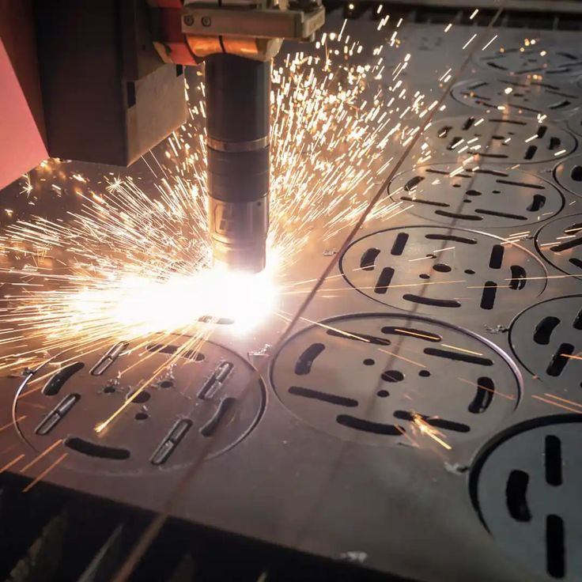

一、一体化方案的效率价值
1.1 材料节约
假设船厂年使用 20 万吨钢板，平均价格按每吨 5000 元进行情景测算。
| 利用率提升 | 理论减少材料量 | 理论价值 |
|---|---|---|
| 0.5 个百分点 | 1,000 吨 | 约 500 万元 |
| 1.0 个百分点 | 2,000 吨 | 约 1,000 万元 |
| 2.0 个百分点 | 4,000 吨 | 约 2,000 万元 |
| 3.0 个百分点 | 6,000 吨 | 约 3,000 万元 |
该测算没有扣除废钢回收收入，也没有考虑不同钢种、库存、采购批量和余料实际复用率。正式商业测算应使用客户真实数据。
1.2 时间节约
假设原流程处理一批零件需要：
| 工作 | 原时间 |
|---|---|
| 数据整理 | 4 小时 |
| 零件分类 | 2 小时 |
| 套料与调整 | 8 小时 |
| 工艺配置 | 4 小时 |
| NC 生成与检查 | 2 小时 |
| 合计 | 20 小时 |
引入一体化系统后的试点目标可以设定为：
| 工作 | 目标时间 |
|---|---|
| 数据整理 | 1 小时 |
| 零件分类 | 0.5 小时 |
| 套料与调整 | 3 小时 |
| 工艺配置 | 1.5 小时 |
| NC 生成与检查 | 1 小时 |
| 合计 | 7 小时 |
生产准备时间从 20 小时下降到 7 小时，对应缩短：
\[ \frac{20-7}{20}=65\% \]
这是情景示例。项目验收必须记录真实人时，区分算法运行时间和人员操作时间。
1.3 设备利用率
切割设备等待通常来自钢板未到位、程序未完成、参数需要修改和任务顺序不清晰。一体化系统可以提前完成程序准备，并将钢板、程序和设备任务绑定。设备综合效率可以使用 OEE 表示：
\[ OEE=\text{可用率}\times\text{性能效率}\times\text{质量率} \]
如果可用率由 70% 提高到 78%，性能效率由 85% 提高到 88%，质量率由 96% 提高到 98%，则：
\[ OEE_{before}=0.70\times0.85\times0.96=57.1\% \]
\[ OEE_{after}=0.78\times0.88\times0.98=67.3\% \]
OEE 提高约 10.2 个百分点。该数字是计算示例，实际改善需由设备数据验证。
二、研究空白的深化
2.1 动态套料
现有大量研究关注静态零件集。船厂现场会不断发生插单、设计变更、材料延迟和设备故障。算法需要在保留已执行结果的前提下重新优化。动态目标可以写为：
\[ \min F_{new}+\lambda D(S_{new},S_{old}) \]
\(D\) 表示新旧计划的差异。差异越大，现场换单、找料和重新审批成本越高。
2.2 几何与工艺联合优化
传统算法先完成几何套料，再检查工艺。这样可能得到利用率很高但无法加工的方案。更先进的方法在候选位置生成时就考虑坡口、桥接、热影响和设备姿态，让不可加工方案尽早被排除。
2.3 工业知识形式化
工艺规则应从文本经验转成计算机可执行形式。例如：
如果板厚 > 20 mm 且零件最长边 > 2,000 mm 且长宽比 > 8 则增加桥接数量 并采用分散切割策略
规则还需要适用范围、版本、批准人和失效时间，防止旧工艺长期保留。
2.4 算法可解释性
工艺人员需要知道系统为什么选择某张钢板、为什么禁止共边、为什么改变切割顺序。系统可以显示：方案材料利用率；约束冲突；热风险区域；穿孔和空行程变化；与人工方案的差异；每次自动调整的理由。可解释性有助于工程师信任系统，也方便发现规则配置错误。
2.5 基准数据和评价体系
建议建立三类测试集：
| 测试集 | 特征 | 主要验证内容 |
|---|---|---|
| 基础集 | 规则零件、孔较少 | 正确性和计算速度 |
| 船舶典型集 | 异形、多孔、长条件 | 材料利用率和嵌套能力 |
| 高难度集 | 坡口、方向、热约束 | 工艺可执行性和稳定性 |
每次版本发布都使用相同数据集回归测试，防止新算法提高利用率却破坏工艺质量。
三、试点验证方案
3.1 试点验证的目的
试点需要回答五个问题：算法能否正确处理船舶异形零件和工艺约束？自动生成的方案能否在真实设备上稳定执行？系统能否与设计、库存、MES 和质量系统可靠交换数据？一体化流程能否减少人工工作、材料浪费和错误？节省的成本能否覆盖软件、实施、设备改造和维护投入？
只展示一个漂亮的套料结果，无法回答以上问题。试点需要覆盖软件正确性、设备加工、流程协同和经济性。
3.2 试点原则
使用真实生产数据。测试数据应来自真实船型、真实零件和真实板材。可以脱敏处理船号和图纸，但不能只用规则矩形或人工挑选的简单零件。
建立公平对照。原流程与新系统需要使用相同的零件、板材规格、设备和质量标准。如果两组样本不同，材料利用率和时间便无法公平比较。
覆盖多种难度。至少设置三类测试集：基础集（规则轮廓、孔少、方向限制少）、典型船舶集（异形、长条、多孔、凹形零件）、高难度工艺集（坡口、共边、桥接、方向和热约束）。
连续运行多个批次。一次测试容易受零件组合、操作人员和钢板规格影响。建议连续运行 3 至 6 个月，覆盖至少数十个生产批次，并观察系统在设计变更、设备故障和紧急插单时的表现。
3.3 试点范围设计
建议将试点分为四个层次。
第一层：离线算法验证。在不连接生产设备的环境中，将历史零件和历史钢板输入新系统，与原套料结果比较。主要验证：几何导入正确率；自动修复能力；套料计算时间；材料利用率；钢板数量；内孔嵌套；方案稳定性；人工调整次数。这一阶段风险较低，可以快速发现几何和算法问题。
第二层：设备试切验证。选择具有代表性的钢板和零件，在测试设备或非关键生产任务上进行试切。主要验证：NC 程序正确性；穿孔和引入引出质量；割缝补偿；坡口角度和钝边；桥接稳定性；切割头可达性；实际加工时间；零件尺寸和热变形。
第三层：生产线并行运行。新旧系统同时运行，由新系统生成方案，原系统或工艺工程师复核后再下发。并行阶段不立即关闭原系统，可以降低切换风险。主要验证：ERP、MES 和 WMS 接口；设计变更传播；程序审批和下发；余料回库；标签和分拣；质量数据回传；操作人员接受程度。
第四层：正式生产与复制。完成验收后，选择一个车间、一个船型或一个零件族正式使用，再扩展到其他生产线和船厂。正式阶段需要形成标准产品包：软件版本；接口清单；后处理器；工艺规则库；实施手册；培训教材；验收标准；运维机制。
3.4 样本量建议
| 验证对象 | 最低建议样本 | 较完整样本 |
|---|---|---|
| 零件数量 | 3,000–5,000 件 | 20,000 件以上 |
| 套料批次 | 20–30 批 | 100 批以上 |
| 板厚规格 | 5 种以上 | 10–20 种 |
| 材质类别 | 2–3 类 | 覆盖主要船板 |
| 设备类型 | 2 类 | 激光、等离子、火焰、坡口 |
| 设计变更案例 | 10 个以上 | 50 个以上 |
| 连续运行周期 | 1 个月 | 3–6 个月 |
样本量还要结合船厂实际产量和系统成熟度调整。算法原型期可以用较小数据集，商业验收期需要扩大范围。
3.5 指标体系

算法指标
| 指标 | 定义 | 意义 |
|---|---|---|
| 材料利用率 | 零件净面积 / 投入钢板面积 | 衡量材料排布效果 |
| 钢板数量 | 完成任务使用的钢板数 | 反映采购和换板需求 |
| 算法运行时间 | 输入到方案生成的时间 | 判断生产可用性 |
| 方案稳定性 | 多次运行结果的波动 | 判断算法是否可重复 |
| 自动套料完成率 | 无需人工排样的零件比例 | 衡量自动化程度 |
| 约束满足率 | 满足全部几何与工艺约束的比例 | 判断结果正确性 |
人工效率指标。生产准备总工时可表示为：
\[ T_{prep}=T_{import}+T_{clean}+T_{nest}+T_{adjust}+T_{process}+T_{post}+T_{check} \]
分别记录数据导入、几何清洗、套料、人工调整、工艺配置、后处理和审核时间。建议记录：每 100 个零件的准备工时；每张钢板的人工调整时间；每个 NC 程序的检查时间；每批任务的人工操作次数；每位工程师每天能够完成的零件数。
设备指标。设备综合效率 OEE 为 \(OEE=A\times P\times Q\)，其中 \(A\) 为可用率，\(P\) 为性能效率，\(Q\) 为质量率。项目还应统计：切割总长度；空行程；穿孔次数；换板时间；程序等待时间；设备报警次数；单位面积加工能耗；实际加工时间与软件估算误差。
质量指标：尺寸合格率；孔径和孔位精度；坡口角度误差；钝边尺寸误差；热变形量；毛刺和挂渣情况；NC 一次通过率；错切、漏切和重切率；返工率；质量追溯完整率。
数据与系统指标：零件属性完整率；设计版本一致率；接口成功率；数据同步延迟；旧程序自动冻结率；材料和零件编码匹配率；余料账实一致率；系统可用性；故障恢复时间。
3.6 基线与对照组设计
建议采用「同批次回放 + 并行生产」的组合方式。
历史回放：将过去已经完成的生产任务重新输入新系统，与历史方案比较。优点是风险低、数据容易获得；缺点是无法完全还原当时的生产条件。
A/B 并行测试：将同类型任务分为原流程组和新系统组。若无法将完全相同的零件重复加工，可以使用复杂度相似的多个批次，并通过面积、孔数、周长、板厚和零件数量进行匹配。
前后对比：在同一生产线上比较系统上线前后 3 个月或 6 个月的数据。需要控制订单结构、人员、设备和钢板规格差异。
3.7 统计分析方法
对同一批零件的新旧方案，可以使用配对比较。设原流程指标为 \(X_i\)，新系统指标为 \(Y_i\)，每批改善值为：
\[ D_i=X_i-Y_i \]
平均改善为：
\[ \bar D=\frac{1}{n}\sum_{i=1}^{n}D_i \]
材料利用率的改善应使用百分点表达。例如从 87% 提高到 89%，应表述为提高 2 个百分点，也可以补充相对提高约 2.30%。
对于存在明显异常值的数据，应同时报告中位数和四分位数。正式验收报告建议提供：样本量；均值和中位数；标准差；最好和最差结果；95% 置信区间；异常样本说明；原始数据来源。
3.8 验收门槛建议
| 指标 | 建议最低门槛 | 目标值 |
|---|---|---|
| 几何导入正确率 | ≥99.5% | ≥99.9% |
| 零件属性完整率 | ≥99% | ≥99.8% |
| 约束满足率 | 100% | 100% |
| NC 一次通过率 | ≥95% | ≥98% |
| 生产准备工时 | 下降 ≥20% | 下降 40% 以上 |
| 人工录入量 | 下降 ≥50% | 下降 80% 以上 |
| 材料利用率 | 不低于原流程 | 提高 1–3 个百分点 |
| 版本误用事件 | 下降 ≥50% | 接近零 |
| 追溯完整率 | ≥95% | ≥99% |
| 系统可用性 | ≥99% | ≥99.5% |
材料利用率不能单独作为一票否决指标，因为特定批次可能受零件组合限制。更合理的方式是对大量批次统计平均改善，同时要求加工时间和质量不恶化。
3.9 试点组织与职责
| 角色 | 主要职责 |
|---|---|
| 船厂项目负责人 | 确定范围、资源和验收标准 |
| 设计部门 | 提供模型、图纸和变更数据 |
| 工艺部门 | 建立规则、审核套料和程序 |
| 生产部门 | 安排设备、班次和任务 |
| 仓储部门 | 提供钢板和余料数据 |
| 质量部门 | 制定检测方法并记录结果 |
| IT 部门 | 接口、账号、网络和安全 |
| 软件团队 | 产品、算法、集成和培训 |
| 设备团队 | 后处理器、联调和试切 |
| 第三方或专家组 | 监督测试和确认结论 |
3.10 试点周期建议
| 阶段 | 时间 | 主要产出 |
|---|---|---|
| 需求与数据梳理 | 1–2 个月 | 流程图、数据字典、接口清单 |
| 离线算法验证 | 2–3 个月 | 基准测试和算法报告 |
| 接口与后处理开发 | 2–4 个月 | PLM/MES/WMS 与设备接口 |
| 设备试切 | 1–2 个月 | 试切件和质量报告 |
| 并行运行 | 2–3 个月 | 新旧流程对照数据 |
| 正式试点 | 3–6 个月 | 验收报告和标准产品包 |
部分阶段可以并行，完整试点通常需要 9 至 15 个月。